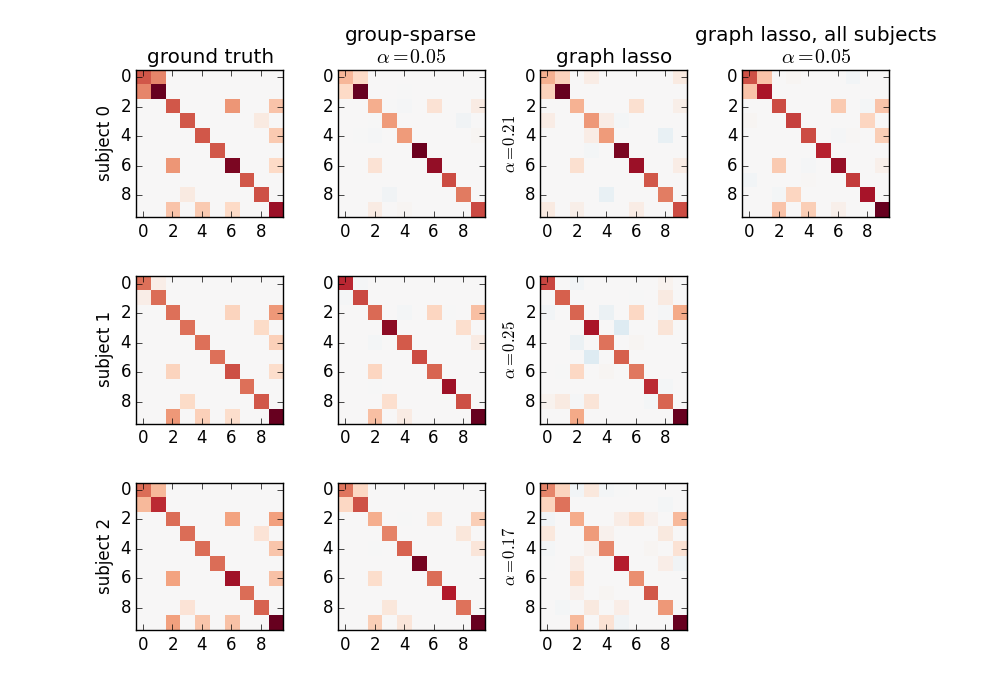

3.2. Connectome extraction: inverse covariance for direct connections¶
Page summary
Given a set of time-series (eg as extracted in the previous section) A functional connectome is a set of connections representing brain interactions between regions. Here we show the use of sparse-inverse covariance to extract functional connectomes focussing only on direct interactions between regions.
Contents
References
3.2.1. Sparse inverse covariance for functional connectomes¶
Resting-state functional connectivity can be obtained by estimating a covariance (or correlation) matrix for signals from different brain regions. The same information can be represented as a weighted graph, vertices being brain regions, weights on edges being covariances (gaussian graphical model). However, coefficients in a covariance matrix reflects direct as well as indirect connections. Covariance matrices form very dense brain connectomes, and it is rather difficult to extract from them only the direct connections between two regions.
As shown in [Smith 2011], [Varoquaux 2010], it is more interesting to use the inverse covariance matrix, ie the precision matrix. It gives only direct connections between regions, as it contains partial covariances, which are covariances between two regions conditioned on all the others.
To recover well the interaction structure, a sparse inverse covariance
estimator is necessary. The GraphLasso, implemented in scikit-learn’s
estimator sklearn.covariance.GraphLassoCV is a good, simple
solution. To use it, you need to create an estimator object:
>>> from sklearn.covariance import GraphLassoCV
>>> estimator = GraphLasso()
And then you can fit it on the activation time series, for instance extracted in the previous section:
>>> estimator.fit(time_series)
The covariance matrix and inverse-covariance matrix (precision matrix) can be found respectively in the covariance_ and precision_ attribute of the estimator:
>>> estimator.covariance_
>>> estimator.precision_

Parameter selection
The parameter controlling the sparsity is set by cross-validation
scheme. If you want to specify it manually, use the estimator
sklearn.covariance.GraphLasso.
Full example
See the following example for a full file running the analysis: Computing a connectome with sparse inverse covariance
Exercise: computing sparse inverse covariance
Compute and visualize a connectome on the first subject of the ADHD
dataset downloaded with nilearn.datasets.fetch_adhd
Hints: The example above has the solution
Reference
- The graph lasso [Friedman et al, Biostatistics 2007] is useful to estimate one inverse covariance, ie to work on single-subject data or concatenate multi-subject data.
3.2.2. Sparse inverse covariance on multiple subjects¶
To work at the level of a group of subject, it can be interesting to estimate multiple connectomes for each, with a similar structure but differing connection values across subjects.
For this, nilearn provides the
nilearn.group_sparse_covariance.GroupSparseCovarianceCV
estimator. Its usage is similar to the GraphLassoCV object, but it takes
a list of time series:
>>> estimator.fit([time_series_1, time_series_2, ...])
And it provides one estimated covariance and inverse-covariance (precision) matrix per time-series: for the first one:
>>> estimator.covariances_[0]
>>> estimator.precisions_[0]
One specific case where this may be interesting is for group analysis across multiple subjects. Indeed, one challenge when doing statistics on the coefficients of a connectivity matrix is that the number of coefficients to compare grows quickly with the number of regions, and as a result correcting for multiple comparisions takes a heavy toll on statistical power.
In such a situation, you can use the GroupSparseCovariance and
set an alpha value a bit higher than the alpha value selected by
cross-validation in the GroupSparseCovarianceCV. Such a choice
will enforce a stronger sparsity on the precision matrices for each
subject. As the sparsity is common to each subject, you can then do the
group analysis only on the non zero coefficients.
Full example
See the following example for a full file running the analysis: Group Sparse inverse covariance for multi-subject connectome
Exercise: computing the correlation matrix of rest fmri
Try using the information above to compute a connectome on the
first 5 subjects of the ADHD dataset downloaded with
nilearn.datasets.fetch_adhd
Hint: The example above has the solution
Reference
3.2.3. Comparing the different approaches on simulated data¶
We simulate several sets of signals, one set representing one subject, with different precision matrices, but sharing a common sparsity pattern: 10 brain regions, for 20 subjects.
A single-subject estimation can be performed using the
sklearn.covariance.GraphLassoCV estimator from scikit-learn.
It is also possible to fit a graph lasso on data from every subject all together.
Finally, we use the
nilearn.group_sparse_covariance.GroupSparseCovarianceCV.
The results are the following:
The group-sparse estimation outputs matrices with the same sparsity pattern, but different values for the non-zero coefficients. This is not the case for the graph lasso output, which all have similar but different structures. Note that the graph lasso applied to all subjects at once gives a sparsity pattern close to that obtained with the group-sparse one, but cannot provide per-subject information.
Note
The complete source code for this example can be found here: Connectivity structure estimation on simulated data
A lot of technical details on the algorithm used for group-sparse estimation and its implementation can be found in Group-sparse covariance estimation.